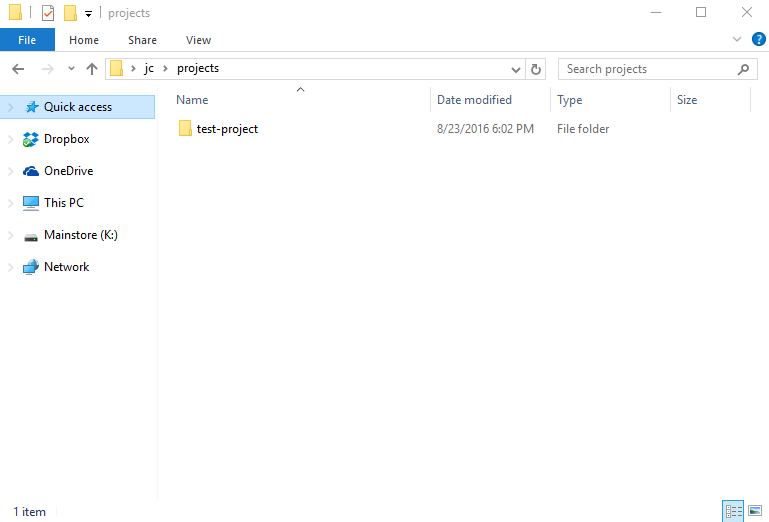
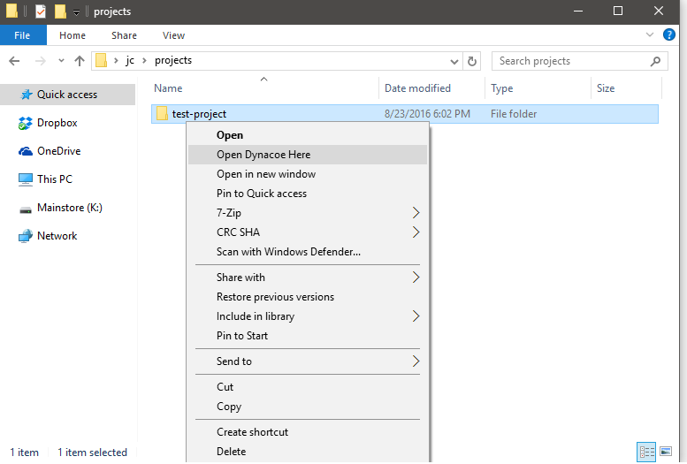
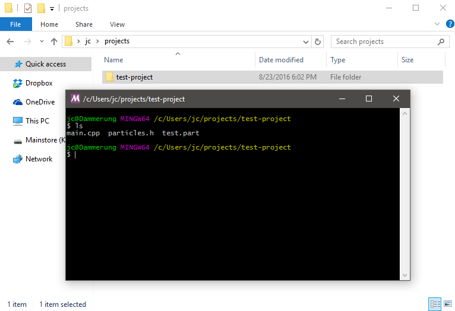
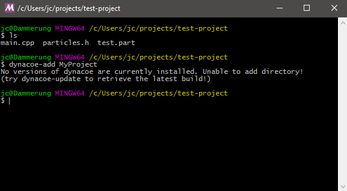
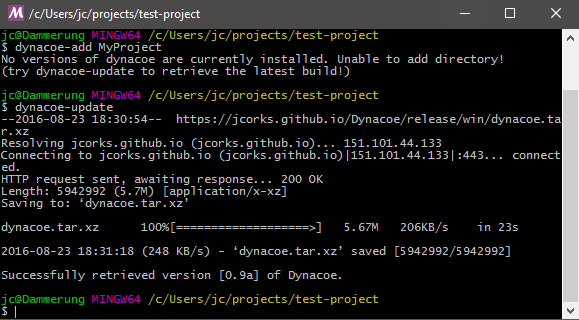
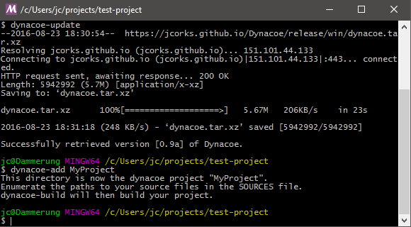
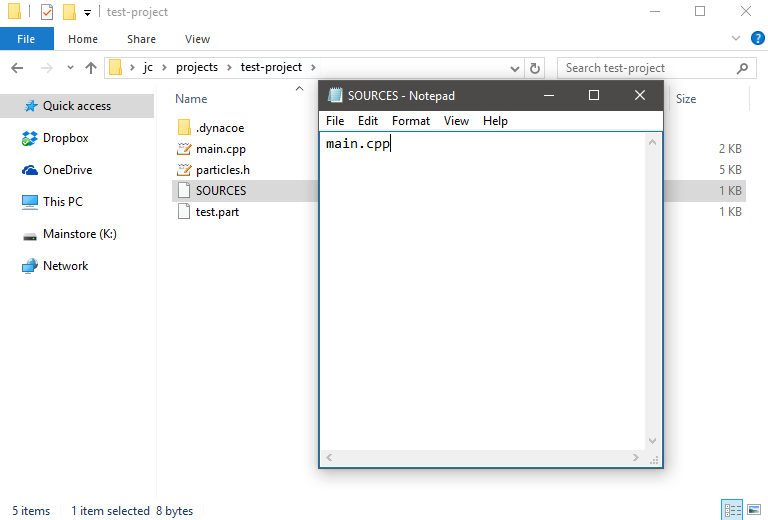
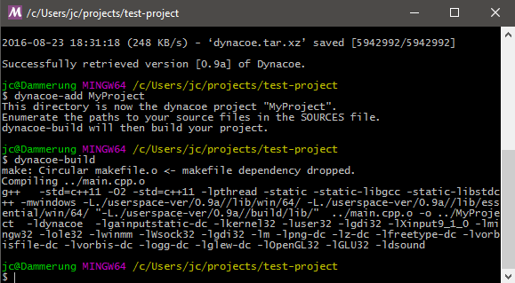
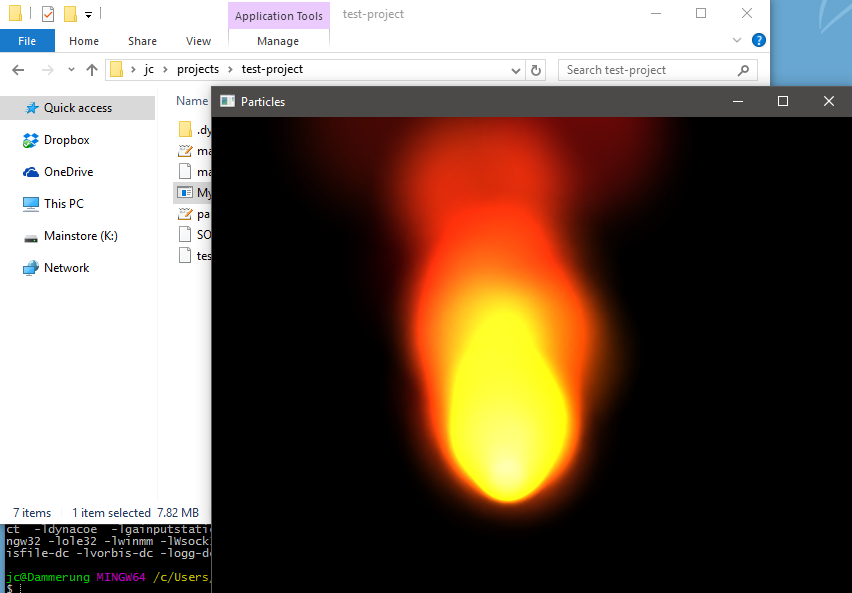

This guide will help you get started with using the tools included in the toolkit installer Note that this is tailored towards Windows users, but the same tools exist for the Linux install. For the Linux toolkit, make sure you have $DYNACOE_INSTALL_PATH defined and have appended $DYNACOE_INSTALL_PATH/bin to your PATH
What the heck did I even install?
For users that have installed the toolkit, they will find a new item on their desktop/start menu called "Dynacoe Build Environment". Opening this shortcut will open a terminal window in the MSYS2 environment specially configured to build Dynacoe projects. This is your build terminal.
For those unfamiliar with terminals, terminals are simply programs that let you launch other programs. You type what program you want to run with the options you want, and the terminal handles the rest. I will be assuming very little knowledge of UNIX-like environments, so bear with me if you're experienced (Or better yet, correct me if I'm wrong- see Contact Us at the top to email me)
In Practice
Instead of going into detail about what exactly was installed file-by-file, we are going to build our very first Dynacoe project. After you have installed the toolkit, download this example.
Once you've downloaded it:
- Make a new directory. (I'm calling mine "test-project")
- Right-click and extract the contents to that directory. (If on an older Windows system, look to 7zip, WinZIP, or some other un-zipping tool)
- Go to the folder above the folder you made in Explorer. So explorer should look something like this now: 
- Right-click the folder that you created. When you installed Dynacoe, it actually added a new option to your right-click menu when right-clicking folders. Click the "Open Dynacoe Here" option. 
- A new terminal should have now opened. The option you just clicked functions exactly like the desktop shortcut, except it's way more useful because it opens the terminal right where you want it.
- Run the command "ls" in the terminal. "ls" is the UNIX program that displays the contents of a directory. You should be given an enumeration of files that were extracted from the example.zip.(For beginners, whenever I say 'Run command "x"', simply type the text in quotes and press enter). It should look similar to the following: 
- Looks like everything is in order at this point. Now the fun starts. Linked in the terminal are a handful of Dynacoe-releated tools. All of them begin with the name "dynacoe-" followed by the tool's action:
- dynacoe-add: (Adds new projects to build)
- dynacoe-build: (builds a project)
- dynacoe-config: (selects between different versions of Dynacoe to use)
- dynacoe-remove: (Removes a project but keeps all your sources)
- dynacoe-update: (acquires and installs new versions of Dynacoe)
- dynacoe-verify: (checks and verifies project directory integrity)
- These tools help you manage Dynacoe-related groups of assets and sources as "projects". Right now, you just have a collection of files in a folder, so most of the Dynacoe-related tools won't know what to do with it quite yet. So, we must make your folder into a Dynacoe project. So to add a project, we use the dynacoe-add command. In the terminal, run the command "dynacoe-add MyProject". You should see something similar to the following: 
- Whoops! Even though you installed the tools to build things with dynacoe you actually dont have the Dynacoe library installed yet! Luckily, there's a tool for that. Make sure you are connected to the internet and run the command "dynacoe-update". This will magically download the most recent stable build of dynacoe from the internet and prepare it for use right away. 
- Now that we have a working build, lets try the dynacoe-add command again to make the directory a working project: 
- Now that we have defined our project, we need to set up some way for Dynacoe tools to figure out what files are sources to compile. This is done by editing the SOURCES file in that directory.
- Go back to Explorer and venture into our project folder
- Right-click the new SOURCES file (this file was created when we made the folder into a Dynacoe project)
- Click "Open With" and choose a text editor to edit it. (I will choose notepad since everyone has it)
- Type "main.cpp"
- Save the file As mentioned, the SOURCES file is what Dynacoe tools look for when compiling your project, so this will need to be updated any time new sources are added. Don't forget!
- Now we can build the project. Run the command "dynacoe-build" to build MyProject.exe. The default release build statically links against its dependencies that aren't core to Windows, so the executable will not require any extra DLLs or other runtime resources. 
- Go to your explorer windows and double-click MyProject.exe. Congrats! You built your first Dynacoe project! 
Next Steps
What you built was an example from the Dynacoe source project showing how to use particles. Try to see if you can build some others and study their code: find out how each one works and the code that leads to the observed behavior. For any function you come across, feel free to search for it in documentation here.
For all of the "dynacoe-" tools that you run from the build terminal, you can pass in "--help" for detailed information on how to use it. For example, running the command "dynacoe-update --help" will display the help page for the dynacoe-update tool.
Happy Coding!